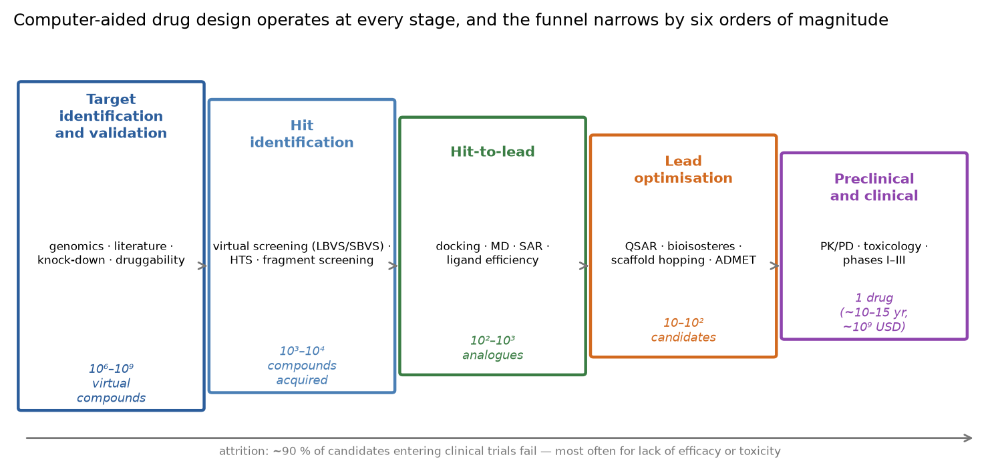
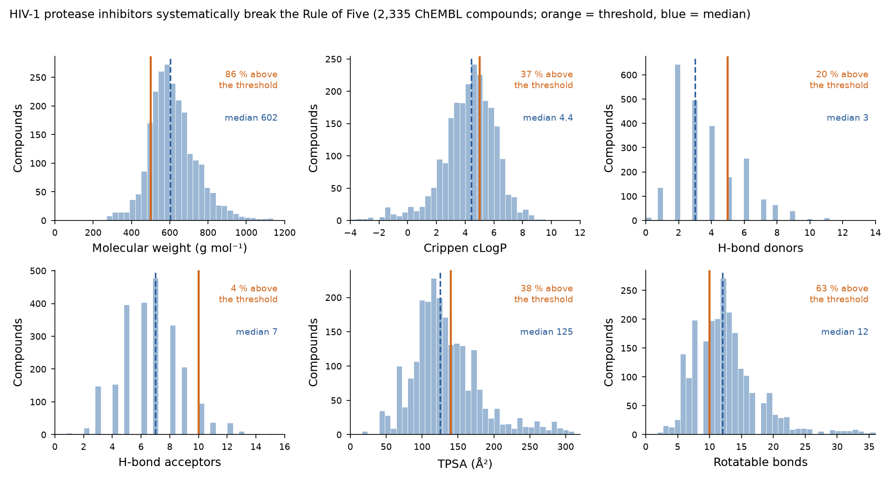
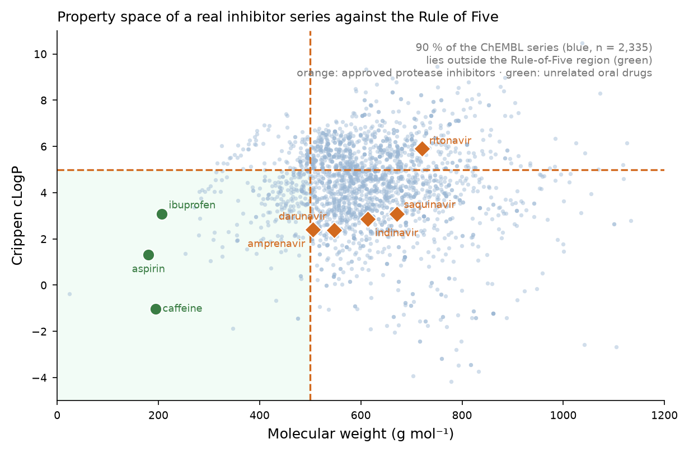
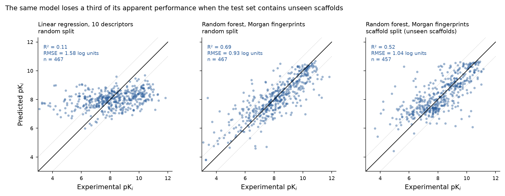
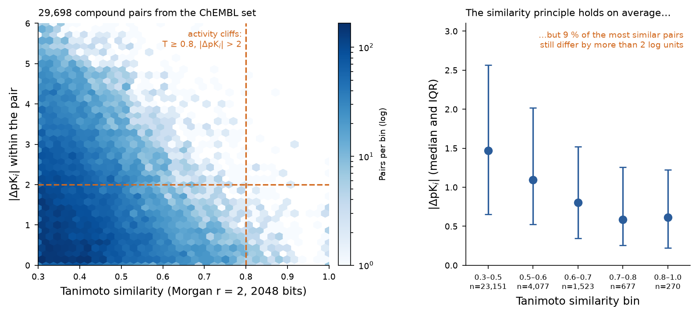
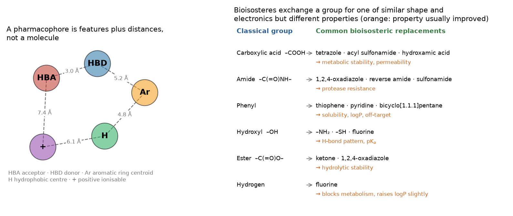

Este documento amplía la cuarta clase del módulo. Los Tópicos 2 y 3 produjeron una estructura y una forma de ubicar un ligando en ella; este tópico plantea la pregunta que motiva todo el módulo —¿qué molécula deberíamos sintetizar?— y presenta las dos familias de métodos que la responden: el diseño basado en estructura, que usa la geometría del blanco, y el diseño basado en ligandos, que usa solo lo que se sabe de moléculas que ya funcionan. Ambos se apoyan en descripciones numéricas de las moléculas, por lo que el tópico comienza con los descriptores y termina con el diseño de nuevos compuestos. Para mantener la discusión concreta, las Secciones 5–7 analizan un conjunto de datos real descargado para este documento: 2,335 inhibidores curados de la proteasa del VIH-1 con Ki medida, obtenidos de ChEMBL —el mismo blanco sometido a docking en el Tópico 3, ahora abordado desde el lado del ligando.
Objetivos de aprendizaje
- Describir las etapas del descubrimiento de fármacos, la tasa de abandono (attrition) entre ellas y el punto en que interviene cada método computacional.
- Definir la druggability (la posibilidad de que un blanco sea modulado por un fármaco) y enumerar las características estructurales que hacen que un blanco sea abordable con moléculas pequeñas.
- Distinguir el diseño basado en ligandos del diseño basado en estructura e indicar qué requiere cada uno como entrada.
- Clasificar los descriptores moleculares según su dimensionalidad (0D–4D) y dar ejemplos de cada clase.
- Aplicar y criticar las reglas de Lipinski, Veber y Jorgensen, e interpretar el QED y la eficiencia de ligando.
- Explicar la lógica del QSAR, construir y validar un modelo, y reconocer las tres fallas habituales: ausencia de validación externa, correlación por azar y un dominio de aplicabilidad no declarado.
- Calcular la similitud molecular, interpretar un coeficiente de Tanimoto y explicar qué es un acantilado de actividad (activity cliff).
- Definir un farmacóforo y utilizarlo para cribado virtual.
- Describir la enumeración combinatoria, el reemplazo bioisostérico y el salto de andamiaje (scaffold hopping) como estrategias de diseño.
- Integrar estos métodos en una cascada de cribado defendible e indicar la decisión que se toma en cada filtro.
Sección 1El proceso (pipeline) de descubrimiento de fármacos
Llevar un fármaco al mercado toma del orden de 10–15 años y, según las estimaciones más citadas, más de mil millones de dólares estadounidenses por compuesto aprobado una vez que se capitaliza el costo de los fracasos.[1] La razón es la tasa de abandono: de las moléculas que ingresan al desarrollo clínico, aproximadamente nueve de cada diez nunca llegan a ser aprobadas, y las dos causas dominantes de fracaso son la eficacia insuficiente y la toxicidad inaceptable.[2] Los métodos computacionales no pueden eliminar ese riesgo, pero sí pueden adelantar las decisiones a etapas en que son baratas.

Históricamente, el campo se desarrolló en tres oleadas, como muestra la línea de tiempo de la clase: las décadas de 1960–70 establecieron las herramientas conceptuales (el QSAR de Hansch en 1964, las primeras estructuras cristalinas, la fundación del PDB en 1971); las décadas de 1980–90 las industrializaron (software comercial de modelado, programas de docking, química combinatoria y cribado de alto rendimiento); y desde la década de 2010 el recurso limitante se ha desplazado del cómputo a los datos, con bibliotecas virtuales ultragrandes, bases de datos públicas de bioactividad y aprendizaje automático. Los primeros fármacos atribuidos explícitamente al diseño basado en estructura —la dorzolamida para el glaucoma, los inhibidores de la proteasa del VIH del Tópico 3, el inhibidor de neuraminidasa zanamivir— datan de esta segunda oleada y siguen siendo los casos de estudio de referencia.
Sección 2Identificación del blanco y druggability
Un proyecto comienza con la hipótesis de que modular una macromolécula determinada cambiará el curso de una enfermedad. Validar esa hipótesis es tarea de la biología, no de la computación —inactivación (knock-out) y silenciamiento (knock-down) génicos, genética de pacientes, análisis de vías, sondas químicas—, pero la computación aporta dos cosas: identifica blancos candidatos a partir de comparaciones genómicas y transcriptómicas (incluidos, en el caso de patógenos, blancos que son esenciales para el microorganismo y que están ausentes o son divergentes en el hospedero), y evalúa si un blanco validado es druggable, es decir, susceptible de ser modulado por un fármaco.
La druggability es la probabilidad de que un blanco pueda ser modulado por una molécula pequeña con las propiedades de un fármaco oral. La clase enumera las características que la determinan, y las estructurales pueden evaluarse computacionalmente:
- Un bolsillo adecuado. Una cavidad enterrada y cerrada de aproximadamente 300–1,000 ų, con un revestimiento mixto hidrofóbico/polar. Los programas de detección de cavidades (fpocket, SiteMap, DoGSiteScorer) informan el volumen, el grado de cierre, la hidrofobicidad y un puntaje de druggability entrenado con sitios druggables conocidos.[3],[4] Las interfaces proteína–proteína planas obtienen puntajes bajos, razón por la cual durante mucho tiempo se consideraron no druggables, un juicio que los péptidos estabilizados, los pegamentos moleculares (molecular glues) y los ligandos covalentes han matizado desde entonces.
- Accesibilidad conformacional. El bolsillo debe ser alcanzable y capaz de adaptarse: los sitios ortostéricos, alostéricos y crípticos plantean problemas distintos (Tópico 3, Sección 1). Los bolsillos crípticos, invisibles en la estructura apo, se detectan mediante dinámica molecular o simulaciones con solventes mixtos (Tópico 5).
- Potencial de selectividad. El sitio debe diferir lo suficiente del sitio equivalente en los parálogos y en los ortólogos del hospedero como para permitir un ligando selectivo, lo que se evalúa proyectando el alineamiento múltiple de secuencias de la familia sobre la estructura (Tópicos 1 y 2).
- Expresión, solubilidad y posibilidad de ensayo, que determinan si alguna predicción puede ponerse a prueba.
Un referente empírico útil: de los aproximadamente 20,000 genes humanos codificantes de proteínas, solo del orden de 600–900 son blancos de fármacos aprobados, y una gran mayoría de ellos pertenece a cuatro familias: GPCR, canales iónicos, receptores nucleares y enzimas (especialmente quinasas y proteasas).[5] La druggability es, por lo tanto, la excepción más que la regla, y establecerla tempranamente es la forma más barata de evitar un fracaso prolongado.
Sección 3Dos estrategias complementarias
| Diseño basado en estructura (SBDD) | Diseño basado en ligandos (LBDD) | |
|---|---|---|
| Requiere | Una estructura 3D del blanco, experimental o modelada (Tópico 2) | Un conjunto de moléculas con actividad medida contra el blanco; no se necesita estructura |
| Métodos centrales | Docking molecular y puntuación (Tópico 3), farmacóforos basados en estructura, diseño de novo en el sitio, MM/GBSA y cálculos de energía libre (Tópico 5) | QSAR, búsqueda por similitud, modelos farmacofóricos derivados de ligandos, comparación de forma, clasificadores de aprendizaje automático |
| Entrega | Una hipótesis de modo de unión —qué residuo toca cada grupo— y, por lo tanto, una justificación dirigida para el diseño | Una predicción de actividad y una indicación de qué características importan, sin decir dónde se unen |
| Falla cuando | No hay estructura, el estado conformacional es incorrecto, el sitio es flexible o mediado por solvente, la función de puntuación es inadecuada | Hay muy pocos activos, todos los activos son de un mismo quimiotipo (sin diversidad), hay acantilados de actividad, se extrapola fuera del dominio de aplicabilidad |
| Uso típico | Nuevos quimiotipos contra un blanco caracterizado estructuralmente; explicar la SAR; diseñar selectividad | Priorizar análogos de una serie conocida; cribado cuando el blanco es una proteína de membrana o no tiene estructura; predicción ADMET |
Ambos enfoques son complementarios más que competidores, y la mayoría de las campañas reales usa los dos: un modelo basado en ligandos para filtrar una biblioteca enorme hasta un conjunto manejable, docking para proponer modos de unión para los compuestos sobrevivientes, y la estructura para explicar y dirigir la siguiente ronda de síntesis. La última diapositiva de la clase (reproducida como la cascada de la Sección 10) es exactamente esta combinación.
Un tercer modo merece mención porque la clase lo nombra: el docking inverso (reverse docking, o pesca de blancos, target fishing) acopla una molécula en muchos blancos en lugar de muchas moléculas en uno, con el fin de proponer un mecanismo para un hit fenotípico, anticipar efectos fuera de blanco (off-target) o reposicionar un fármaco aprobado. Su confiabilidad es menor, porque los puntajes calculados en sitios distintos no son comparables (Tópico 3, Sección 6.3), pero es un generador de hipótesis útil.
Sección 4Descriptores moleculares
Todo método basado en ligandos comienza por convertir una molécula en números. Un descriptor molecular es "el resultado final de un procedimiento lógico y matemático que transforma la información química codificada en una representación simbólica de una molécula en un número útil" (Todeschini y Consonni).[6] Existen miles; convencionalmente se organizan según la dimensionalidad de la representación que requieren.
| Clase | Entrada necesaria | Ejemplos | Uso típico |
|---|---|---|---|
| 0D | Fórmula molecular | Peso molecular, número de átomos, número de enlaces, número de átomos pesados | Filtros, normalización (eficiencia de ligando) |
| 1D | Lista de subestructuras | Conteos de grupos funcionales, anillos, enlaces rotables, donores y aceptores de enlaces de hidrógeno; claves estructurales (MACCS) | Reglas de semejanza a fármaco, filtrado grueso |
| 2D | Grafo molecular (conectividad) | Índices topológicos (Wiener, Randić, χ de Kier–Hall), conteos de caminos y recorridos, área superficial polar topológica (TPSA), cLogP, fracción de carbonos sp³, huellas moleculares circulares (Morgan/ECFP) | QSAR, búsqueda por similitud, aprendizaje automático: la clase de uso más intensivo |
| 3D | Un confórmero | Volumen y superficie moleculares, área superficial accesible al solvente, radio de giro, momento dipolar, momentos principales de inercia, huellas farmacofóricas 3D, campos de interacción CoMFA/CoMSIA | QSAR 3D, cribado por forma, farmacóforos |
| 4D y superiores | Un conjunto (ensamble) conformacional, o datos de interacción ligando–receptor | QSAR 4D (campos promediados sobre el ensamble), huellas de interacción obtenidas de docking o MD (Tópico 5) | Ligandos flexibles, series con ajuste inducido |
Dos aspectos prácticos. Primero, los descriptores 2D suelen ser suficientes: como no requieren un confórmero, son rápidos, deterministas y reproducibles, y en una evaluación comparativa tras otra un modelo construido con huellas circulares es tan bueno o mejor que uno construido con campos 3D. Segundo, los descriptores deben ser interpretables o validados, no ambas cosas: un modelo basado en cLogP y TPSA le dice a un químico qué cambiar; un modelo basado en 2,048 bits de huella molecular normalmente predice mejor, pero dice poco. El QSAR desarrollado en la Sección 6 cuantifica este compromiso con datos reales.
Tres descriptores reaparecen a lo largo del tópico y merecen una definición.
- logP, el logaritmo del coeficiente de partición octanol/agua, mide la lipofilicidad: logP = log([fármaco]octanol/[fármaco]agua). Los valores positivos indican que el compuesto prefiere la fase orgánica. Gobierna la permeabilidad de membrana, la unión a proteínas plasmáticas, el aclaramiento metabólico y la promiscuidad, y es el descriptor fisicoquímico individual más informativo en el diseño de fármacos. Las estimaciones calculadas se escriben cLogP; a pH fisiológico, la versión corregida por ionización, logD7.4, es más pertinente para un compuesto ionizable.
- TPSA, el área superficial polar topológica, es la superficie aportada por los átomos de nitrógeno y oxígeno (y sus hidrógenos), calculada a partir del grafo 2D sumando contribuciones tabuladas de fragmentos. Se correlaciona con la permeabilidad pasiva: los compuestos con TPSA superior a ~140 Ų se absorben mal por vía oral, y por encima de ~90 Ų rara vez atraviesan la barrera hematoencefálica.
- Las huellas Morgan/ECFP codifican el entorno circular de cada átomo hasta un radio r mediante una función hash, y activan el bit correspondiente en un vector de longitud fija. ECFP4 corresponde a r = 2. Son la entrada estándar para la búsqueda por similitud y para el QSAR basado en aprendizaje automático.
Sección 5Reglas de semejanza a fármaco y ADMET
5.1 Las reglas
Históricamente, alrededor del 40 % de los candidatos fracasaba por razones farmacocinéticas; la respuesta fue un conjunto de filtros empíricos que se aplican antes de sintetizar cualquier compuesto. La clase enumera los tres más utilizados.
| Regla | Año | Criterios | Qué predice |
|---|---|---|---|
| Regla de los Cinco de Lipinski[7] | 1997/2001 | MW ≤ 500 · logP ≤ 5 · HBD ≤ 5 · HBA ≤ 10 (violar dos o más predice un problema) | Absorción o permeación deficiente tras la administración oral. Derivada de compuestos que habían llegado a fase II; excluye explícitamente a sustratos de transportadores activos, antibióticos, antifúngicos, vitaminas y glucósidos cardíacos |
| Reglas de Veber[8] | 2002 | Enlaces rotables ≤ 10 · TPSA ≤ 140 Ų (o número total de enlaces de hidrógeno ≤ 12) | Biodisponibilidad oral en ratas; incorpora la flexibilidad molecular, que la Regla de los Cinco omite |
| Regla de los Tres de Jorgensen[9] | 2002/2011 | logS > −5.7 · permeabilidad aparente en Caco-2 > 22 nm s⁻¹ · menos de 7 metabolitos primarios | Solubilidad, permeabilidad celular y carga metabólica; calculadas con QikProp |
| Regla de los Tres de Congreve | 2003 | MW ≤ 300 · cLogP ≤ 3 · HBD ≤ 3 · HBA ≤ 3 · enlaces rotables ≤ 3 | Idoneidad como punto de partida de tipo fragmento, no como fármaco |
| QED[10] | 2012 | Media geométrica ponderada de funciones de deseabilidad sobre ocho propiedades; 0–1 | "Semejanza a fármaco" cuantitativa y continua en lugar de un conteo de aprobado/reprobado; los fármacos orales aprobados se centran alrededor de 0.5–0.7 |
Cómo usar una regla, y cómo no usarla
Se trata de observaciones estadísticas sobre fármacos orales históricos, no de leyes. El propio Lipinski enfatizó que la Regla de los Cinco predice absorción, no actividad, y que no se aplica a compuestos captados por transportadores ni administrados por otras vías. Usadas como filtro sobre una biblioteca de cribado, son sensatas; usadas para descartar un compuesto activo, destruyen proyectos. La práctica moderna consiste en tratarlas como un mapa de dónde aumenta el riesgo —la química "más allá de la regla de los cinco" (macrociclos, peptidomiméticos, PROTAC) es un campo activo y exitoso[11]— y en complementarlas con métricas de optimización basadas en propiedades, como la eficiencia de ligando (Tópico 3) y la eficiencia lipofílica de ligando, LLE = pIC50 − cLogP.[12]
5.2 Una serie real frente a las reglas
Para ver qué hacen las reglas con una serie genuina de inhibidores, se descargaron para este documento 3,680 mediciones de Ki contra la proteasa del VIH-1 (blanco de ChEMBL CHEMBL243, la misma enzima sometida a docking en el Tópico 3), que se agregaron en 2,519 compuestos únicos tomando la mediana de pKi por compuesto, y se curaron eliminando mezclas y potencias fuera del intervalo físicamente significativo de pKi 3–12, con lo que quedaron 2,335 compuestos. Los descriptores se calcularon con RDKit. La etapa de curación no es cosmética: la descarga original contenía valores de Ki informados que correspondían a pKi tan bajos como −3.7 y tan altos como 14.2, lo que constituye errores de digitación o de unidades, y un modelo entrenado con ellos estaría ajustando ruido.

En otras palabras, los inhibidores peptidomiméticos de proteasa son una clase química que la Regla de los Cinco rechaza casi en bloque. Y, sin embargo, cinco de ellos son fármacos orales aprobados, cuyas propiedades calculadas se presentan a continuación.
| Compuesto | MW | cLogP | HBD | HBA | TPSA (Ų) | Enl. rot. | QED | Violaciones Ro5 | Veber |
|---|---|---|---|---|---|---|---|---|---|
| amprenavir | 505.6 | 2.4 | 3 | 7 | 131.2 | 11 | 0.4 | 1 | no cumple |
| darunavir | 547.7 | 2.38 | 3 | 8 | 140.4 | 11 | 0.364 | 1 | no cumple |
| indinavir | 613.8 | 2.87 | 4 | 7 | 118.0 | 11 | 0.263 | 1 | no cumple |
| saquinavir | 670.9 | 3.09 | 5 | 7 | 166.7 | 12 | 0.198 | 1 | no cumple |
| ritonavir | 721.0 | 5.91 | 4 | 9 | 145.8 | 17 | 0.106 | 2 | no cumple |
| aspirina | 180.2 | 1.31 | 1 | 3 | 63.6 | 2 | 0.55 | 0 | cumple |
| cafeína | 194.2 | -1.03 | 0 | 3 | 61.8 | 0 | 0.538 | 0 | cumple |
| ibuprofeno | 206.3 | 3.07 | 1 | 1 | 37.3 | 4 | 0.822 | 0 | cumple |

Observen también la columna QED de la tabla: los inhibidores aprobados obtienen 0.11–0.40, muy por debajo del intervalo 0.5–0.7 típico de los fármacos orales, mientras que el ibuprofeno obtiene 0.82. Un puntaje de semejanza a fármaco es una probabilidad a priori, no un veredicto.
5.3 ADMET
ADMET —absorción, distribución, metabolismo, excreción y toxicidad— es lo que determina si un compuesto potente puede convertirse en un medicamento. Cada componente tiene sustitutos computacionales.
| Propiedad | Qué gobierna | Sustitutos in silico habituales |
|---|---|---|
| Absorción | Fracción de una dosis oral que llega a la circulación portal | Modelos de permeabilidad en Caco-2 o MDCK, clasificadores de absorción intestinal humana, logS (solubilidad acuosa), TPSA, predicción de sustratos de glicoproteína P |
| Distribución | Hacia dónde va el fármaco | Unión a proteínas plasmáticas, volumen de distribución, penetración de la barrera hematoencefálica (logBB, TPSA < 90 Ų como criterio aproximado) |
| Metabolismo | Con qué rapidez se destruye, y en qué se convierte | Clasificadores de sustratos/inhibidores de isoformas del citocromo P450 (1A2, 2C9, 2C19, 2D6, 3A4), predicción del sitio de metabolismo, modelos de estabilidad microsomal, número de metabolitos primarios (Jorgensen) |
| Excreción | Aclaramiento y vida media | Modelos de regresión del aclaramiento total y renal |
| Toxicidad | Si puede administrarse de forma segura | Bloqueo de hERG (prolongación cardíaca del QT), mutagenicidad de Ames, hepatotoxicidad, alertas estructurales y filtros PAINS para interferencia en el ensayo[13] |
Servidores gratuitos —SwissADME, ADMETlab, pkCSM, admetSAR— calculan la mayoría de estas propiedades en segundos a partir de una cadena SMILES.[14],[15] Sus predicciones tienen calidad de clasificación, no de medición, y su dominio de aplicabilidad es la química de sus conjuntos de entrenamiento; conviene usarlas para ordenar y para alertar, nunca para concluir. Vale la pena interiorizar dos advertencias específicas: una alerta de hERG es razón para eliminar ese rasgo tempranamente mediante el diseño, porque la cardiotoxicidad hace fracasar los programas en etapas tardías; y una coincidencia con PAINS no demuestra que un compuesto sea un falso positivo, pero sí implica que el resultado del ensayo necesita confirmación ortogonal.
Puntos clave — Sección 5
- Las reglas de semejanza a fármaco describen el centro del espacio histórico de los fármacos orales; predicen absorción, no actividad, y tienen excepciones explícitas.
- Medido en una serie real, el 86 % de los inhibidores de la proteasa del VIH-1 incumple el límite de MW y el 63 % el límite de enlaces rotables, y sin embargo cinco son fármacos aprobados.
- Usen las reglas para priorizar, las métricas (LE, LLE, QED) para optimizar, y nunca para vetar un compuesto activo confirmado experimentalmente.
- Los modelos ADMET son herramientas de ordenamiento con un dominio de aplicabilidad limitado; hERG y PAINS merecen atención temprana.
Sección 6Relaciones cuantitativas estructura–actividad
6.1 La idea de Hansch
La clase plantea el problema exactamente como lo hizo Hansch: colocar diez sustituyentes distintos en cuatro posiciones de un anillo de benceno requeriría 10⁴ síntesis. En lugar de eso, se sintetiza un subconjunto pequeño e informativo, se mide la actividad y se ajusta una relación entre la actividad y propiedades moleculares que permita predecir el resto. El artículo de 1964 de Corwin Hansch y Toshio Fujita hizo esto con tres términos —un término hidrofóbico (la constante de sustituyente π, derivada del logP), un término electrónico (la σ de Hammett) y un término estérico (la Es de Taft o los parámetros de Verloop)— en una relación lineal de energía libre:[16]
Tres rasgos de esta formulación siguen siendo la base de todo el campo. La variable dependiente es logarítmica, porque la energía libre es logarítmica en la concentración (Tópico 3, Sección 3), de modo que una unidad de pKi equivale a 1.36 kcal mol⁻¹. Las variables independientes son contribuciones aditivas de los sustituyentes, lo que permite predecir combinaciones que nunca se sintetizaron. Y la relación es local a una serie congenérica: las mismas constantes de sustituyente en un andamiaje distinto dan coeficientes distintos.
6.2 Un QSAR desarrollado sobre el conjunto de datos de la proteasa del VIH-1
Usando los 2,335 compuestos curados de la Sección 5.2, se construyeron cuatro modelos para este documento: una regresión lineal múltiple de tipo Hansch sobre diez descriptores fisicoquímicos interpretables (MW, cLogP, HBD, HBA, TPSA, enlaces rotables, átomos pesados, anillos, anillos aromáticos y fracción de carbonos sp³) y un bosque aleatorio (random forest), cada uno sobre esos descriptores y sobre huellas de Morgan de 2,048 bits (r = 2). Cada modelo se evaluó en un conjunto de prueba reservado del 20 % bajo dos particiones distintas.
| Modelo | Descriptores | Partición | R² de prueba | RMSE de prueba (unidades log) |
|---|---|---|---|---|
| Regresión lineal múltiple | 10 fisicoquímicos | aleatoria (80/20) | 0.107 | 1.58 |
| Bosque aleatorio (500 árboles) | 10 fisicoquímicos | aleatoria (80/20) | 0.522 | 1.16 |
| Bosque aleatorio (500 árboles) | Huella de Morgan, r = 2, 2048 bits | aleatoria (80/20) | 0.688 | 0.93 |
| Bosque aleatorio (500 árboles) | Huella de Morgan | por andamiaje (andamiajes de Murcko no vistos) | 0.517 | 1.04 |
| Regresión lineal múltiple | 10 fisicoquímicos | por andamiaje | -0.141 | 1.60 |
| Control de aleatorización de y (10 corridas) | Huella de Morgan | aleatoria, etiquetas permutadas | media -0.201 (máx -0.102) | — |

Los coeficientes estandarizados del modelo lineal son instructivos aun siendo pobre el modelo, porque muestran a qué se adhiere una regresión sobre propiedades globales:
| Descriptor | MW | cLogP | HBD | HBA | TPSA | RotB | pesados | anillos | arom | frac_csp3 |
|---|---|---|---|---|---|---|---|---|---|---|
| Coeficiente estandarizado | -0.57 | +0.01 | -0.17 | +0.38 | -0.14 | -0.30 | +0.87 | +0.36 | -0.34 | -0.34 |
Los dos términos mayores son el número de átomos pesados (+0.87) y el peso molecular (−0.57), descriptores de tamaño casi colineales que entran con signos opuestos: un síntoma de manual de multicolinealidad más que una comprensión física. Es la misma dependencia del tamaño que se observa en los puntajes de docking (Tópico 3, Sección 7.3), y es la razón por la cual los conjuntos de descriptores deben revisarse en busca de correlaciones y por la cual los coeficientes de un ajuste sin regularización sobre descriptores correlacionados no deben interpretarse mecanísticamente.
6.3 Validación: las tres fallas habituales
Un artículo de QSAR puede estar equivocado de tres maneras que un lector puede detectar sin volver a ejecutar nada, y el experimento anterior ilustra las tres.
- Ausencia de validación externa. El ajuste de un modelo a los datos con los que fue entrenado (R², o q² por validación cruzada dejando uno fuera) dice casi nada sobre la predicción. Solo cuenta el desempeño sobre compuestos reservados antes de cualquier selección de modelo. Informen R²prueba y RMSEprueba, junto con el número de compuestos de prueba.
- Correlación por azar. Con suficientes descriptores, puede ajustarse cualquier variable objetivo. El control estándar es la aleatorización de y (y-randomisation): se permutan las etiquetas de actividad, se reajusta el modelo y se verifica que el desempeño se desplome. En el experimento anterior, diez bosques aleatorios con y aleatorizada sobre huellas moleculares dieron un R² medio de prueba de −0.20 (máximo −0.10) frente a 0.69 con las etiquetas reales, lo que confirma que la señal no es un artefacto de la capacidad del modelo.
- Un dominio de aplicabilidad no declarado. Un modelo interpola; no extrapola. Una predicción para una molécula distinta de todo lo presente en el conjunto de entrenamiento es poco confiable, cualquiera sea el R² informado, y la práctica honesta consiste en informar, para cada predicción, una distancia al conjunto de entrenamiento (Tanimoto del vecino más cercano, apalancamiento o la desviación estándar entre los árboles de un bosque) y en rechazar las predicciones fuera del dominio. El resultado de la partición por andamiaje es la expresión cuantitativa de esto: el mismo modelo que obtiene 0.69 dentro de sus quimiotipos obtiene 0.52 fuera de ellos.
Los cinco principios de la OCDE para la validación regulatoria de un QSAR codifican los mismos requisitos: un criterio de valoración (endpoint) definido, un algoritmo sin ambigüedades, un dominio de aplicabilidad definido, medidas apropiadas de bondad de ajuste, robustez y capacidad predictiva, y —cuando sea posible— una interpretación mecanística.[17] Los estándares de reporte para el aprendizaje automático en química añaden una cuarta exigencia concreta: indicar exactamente cómo se dividieron los datos, porque una partición aleatoria de un conjunto de datos lleno de series de análogos siempre favorecerá al modelo.[18]
6.4 QSAR 3D
El QSAR clásico correlaciona la actividad con propiedades de los sustituyentes; el QSAR 3D la correlaciona con campos calculados alrededor de moléculas alineadas. En CoMFA (análisis comparativo de campos moleculares, Cramer 1988) las moléculas de una serie se alinean en un marco común, se desplaza un átomo sonda sobre una rejilla que las rodea, y las energías de interacción estérica (Lennard-Jones) y electrostática (Coulomb) en cada punto de la rejilla se convierten en descriptores; una regresión por mínimos cuadrados parciales relaciona los miles de valores de la rejilla con la actividad.[19] CoMSIA reemplaza los potenciales de variación abrupta por campos de similitud de forma gaussiana y añade campos hidrofóbicos y de enlace de hidrógeno.[20] El atractivo del método está en su salida: mapas de contorno que muestran, en tres dimensiones alrededor del ligando, dónde el agregado de volumen o de carga positiva aumentaría o disminuiría la actividad; una instrucción directa para un químico medicinal.
Sus debilidades son igualmente específicas. El resultado depende críticamente del alineamiento y del confórmero elegido para cada molécula, ninguno de los cuales se conoce para un compuesto cuya actividad aún no ha sido medida; por lo tanto, el método funciona bien para series rígidas y congenéricas, y mal para conjuntos diversos. Cuando existe una estructura del complejo, la vía habitual es someter la serie a docking y alinear según las poses predichas; cuando no existe, se usa un alineamiento farmacofórico.
Sección 7Similitud, acantilados de actividad y andamiajes
El principio de similitud —las moléculas estructuralmente similares tienden a tener propiedades similares— sustenta la búsqueda por similitud, el diseño basado en andamiajes y la mayor parte del aprendizaje automático en química. La similitud se cuantifica con el coeficiente de Tanimoto entre huellas moleculares:
¿Qué tan bien se cumple el principio? La Figura 5 responde para la serie de la proteasa del VIH-1, usando 29,698 pares de compuestos construidos a partir de una submuestra aleatoria del conjunto de datos.

Los acantilados de actividad importan por tres razones.[21] Son los puntos donde un cambio pequeño y sintéticamente trivial produce un efecto grande, por lo que aportan la mayor cantidad de información de SAR por compuesto. Son el modo de falla sistemático de todo modelo basado en similitud, incluido el aprendizaje automático: un modelo que predice de forma suave no puede reproducir una discontinuidad, lo que explica en parte por qué el R² de la partición por andamiaje de la Sección 6 es el que es. Y suelen tener una explicación estructural —un enlace de hidrógeno perdido con un residuo enterrado, un choque estérico con una cadena lateral, un cambio de protonación—, y es ahí donde el docking y la dinámica molecular (Tópicos 3 y 5) ganan su lugar en un proyecto basado en ligandos.
El concepto complementario es el andamiaje. El marco de Bemis–Murcko de una molécula es lo que queda tras eliminar las cadenas laterales, conservando los sistemas de anillos y los enlazadores entre ellos.[22] En el conjunto de datos curado, los 2,335 compuestos se reducen a 1,004 andamiajes de Murcko distintos, de los cuales 696 aparecen una sola vez; el andamiaje individual más frecuente —un núcleo de urea cíclica simétrico con sustitución dibencílica— agrupa 86 compuestos. Esa distribución (unas pocas series grandes de análogos y una cola larga de casos únicos) es típica de los conjuntos de datos de química medicinal, y es precisamente la razón por la cual una partición aleatoria de entrenamiento/prueba filtra información: los análogos de un compuesto de prueba están en el conjunto de entrenamiento. Agrupar por andamiaje es la partición mínima defendible, y es la razón por la cual existe el panel derecho de la Figura 4.
Sección 8Farmacóforos
Un farmacóforo es, según la definición de la IUPAC, el conjunto de características estéricas y electrónicas necesarias para asegurar las interacciones supramoleculares óptimas con un blanco biológico específico y para desencadenar (o bloquear) su respuesta biológica.[23] Es una abstracción, no una molécula: especifica tipos de característica y las distancias entre ellas, de modo que moléculas químicamente no relacionadas pueden satisfacer el mismo farmacóforo. Los tipos de característica habituales son donor de enlace de hidrógeno, aceptor de enlace de hidrógeno, centro hidrofóbico, centroide de anillo aromático (opcionalmente con una normal al plano), ionizable positivo e ionizable negativo, cada uno representado como una esfera con un radio de tolerancia de alrededor de 1–1.5 Å, además de volúmenes de exclusión opcionales que marcan el espacio ocupado por el receptor.

Los farmacóforos se construyen de dos maneras. Los modelos basados en ligandos se derivan de un conjunto de activos conocidos: las moléculas se expanden conformacionalmente, se alinean y se conservan las características comunes a los activos (y, en los mejores protocolos, ausentes en los inactivos conocidos). El enfoque necesita al menos un puñado de activos estructuralmente diversos, y su problema difícil es el mismo del QSAR 3D: qué confórmero y qué alineamiento. Los modelos basados en estructura se leen directamente de un complejo: las interacciones que el ligando cristalográfico o acoplado establece con el sitio definen las características, y los átomos de la proteína definen los volúmenes de exclusión. Un farmacóforo basado en estructura puede construirse a partir de un único complejo y es el puente natural entre el Tópico 3 y este tópico.
Su uso principal es el cribado farmacofórico: se busca en una base de datos de confórmeros pregenerados las moléculas capaces de ubicar las características requeridas dentro de la tolerancia. Es de uno a dos órdenes de magnitud más rápido que el docking, es insensible a los problemas de las funciones de puntuación del Tópico 3 y, como ignora por completo el andamiaje, es el método de elección para el salto de andamiaje. Su costo es la especificidad: un farmacóforo de cuatro características con tolerancias generosas coincidirá con un número inverosímil de moléculas, por lo que los modelos normalmente se validan contra activos y señuelos conocidos (como en el Tópico 3, Sección 8) y los hits sobrevivientes se someten a docking antes de comprarlos.
Sección 9Diseño de nuevas moléculas
9.1 Enumeración combinatoria
La receta de la clase es el núcleo práctico de la optimización de líderes: identificar el blanco y un activo conocido; identificar las posiciones de grupo R del andamiaje que la química puede alcanzar; enumerar sustituyentes en esas posiciones para generar 10²–10⁶ derivados virtuales; y filtrarlos computacionalmente —semejanza a fármaco, ADMET, docking, QSAR— para seleccionar las pocas decenas que vale la pena sintetizar. La enumeración es una manera barata de ser sistemático, y los catálogos modernos de "síntesis bajo demanda" (Enamine REAL, Chemspace) son enumeraciones exactamente de este tipo, construidas a partir de bloques de construcción catalogados y de reacciones validadas, de modo que cada molécula virtual tiene una ruta sintética realista.
Dos restricciones mantienen útil una enumeración. La accesibilidad sintética: puntuar los productos (SAscore, RAscore, planificadores de retrosíntesis) y descartar lo que nadie sintetizará. El control de diversidad y de propiedades: enumerar todas las combinaciones infla el peso molecular y la lipofilicidad, por lo que conviene aplicar los filtros de propiedades de la Sección 5 durante la enumeración, no después.
9.2 Reemplazo bioisostérico
Los bioisósteros son grupos con forma, volumen y distribución electrónica similares que pueden reemplazarse entre sí conservando la actividad biológica. El bioisosterismo clásico (Erlenmeyer, Grimm, Friedman) agrupaba átomos y grupos pequeños según el número de electrones de valencia; el bioisosterismo no clásico se define funcionalmente, por la capacidad de establecer las mismas interacciones.[24] El reemplazo casi nunca se hace para mejorar la potencia: se hace para corregir algo más manteniendo la potencia, sea estabilidad metabólica (reemplazar un éster metabólicamente lábil o una posición para susceptible de hidroxilación), permeabilidad (tetrazol por carboxilato, que conserva la acidez y la carga pero aumenta la lipofilicidad), solubilidad (piridina por fenilo), posición de patente o toxicidad. El panel derecho de la Figura 6 enumera los intercambios que aparecen con mayor frecuencia. Las bases de datos de pares bioisostéricos extraídos de la literatura de química medicinal (SwissBioisostere, análisis de pares moleculares emparejados) convierten esto en un recurso consultable, con la frecuencia observada y el efecto medido sobre las propiedades para cada intercambio.[25]
9.3 Salto de andamiaje
El salto de andamiaje (scaffold hopping) reemplaza el marco central manteniendo en su lugar las características farmacofóricas.[26] Las motivaciones son las que enumera la clase —eludir una patente, eliminar un toxicóforo o un pasivo metabólico, mejorar las propiedades fisicoquímicas, o simplemente encontrar una segunda serie química como resguardo— y los métodos son los ya tratados[34]: el cribado farmacofórico (que por construcción ignora el andamiaje), el cribado basado en forma (ROCS y similares, que alinean las moléculas por solapamiento de volumen y electrostática en lugar de por subestructura), el docking con el modo de unión original como restricción y el reemplazo de fragmentos en el sitio. Los ejemplos clásicos de los libros de texto son el linaje de analgésicos morfina → fentanilo → meperidina y la progresión desde inhibidores peptídicos a inhibidores no peptídicos de la proteasa del VIH: el andamiaje de urea cíclica que domina el conjunto de datos de ChEMBL de la Sección 7 es él mismo producto de un salto de andamiaje a partir de los análogos peptidomiméticos del estado de transición.
9.4 Diseño generativo y asistido por IA
Desde alrededor de 2018 se ha añadido una cuarta estrategia: en lugar de enumerar y filtrar, generar moléculas condicionadas a las propiedades deseadas. Los autocodificadores variacionales, los modelos de lenguaje recurrentes sobre SMILES, el aprendizaje por refuerzo y, más recientemente, los modelos de difusión sobre estructuras 3D producen moléculas candidatas optimizadas para un puntaje multiobjetivo (potencia predicha, ADMET, accesibilidad sintética).[27],[28] Los primeros compuestos de diseño generativo han ingresado a ensayos clínicos, y los generadores condicionados por la estructura, que ubican una molécula directamente en un bolsillo de unión, constituyen un área de investigación activa. Las advertencias vigentes son las de cualquier modelo: el generador optimiza el puntaje que se le entregó, de modo que un modelo de puntuación defectuoso produce sinsentidos expresados con confianza; las moléculas todavía deben sintetizarse y ensayarse; y los éxitos reportados están, por ahora, concentrados en familias de blancos con abundantes precedentes. Para un estudiante, el punto importante es que el diseño generativo no reemplaza ninguna parte de este tópico: depende por completo de los descriptores, los modelos de propiedades y la disciplina de validación de las Secciones 4 a 6.
Sección 10Un flujo de trabajo integrado
La última diapositiva de la clase integra los métodos en una cascada. Expresada como decisiones, con la pregunta que responde cada filtro:
| Etapa | Método | Pregunta que responde | Supervivencia típica |
|---|---|---|---|
| 0. Biblioteca | Base de datos química (ZINC, Enamine REAL, ChEMBL, DrugBank, PubChem) | ¿Qué se puede comprar o sintetizar? | 10⁶–10⁹ |
| 1. Filtros de propiedades | Reglas de semejanza a fármaco y a compuesto líder, alertas PAINS y de grupos reactivos, predictores ADMET | ¿Podría esto llegar a ser un fármaco, e interferirá con el ensayo? | Se elimina 20–60 % |
| 2. Prefiltro basado en ligandos | Cribado farmacofórico, búsqueda por similitud, clasificador QSAR/ML | ¿Se parece a lo que funciona? | 10³–10⁵ |
| 3. Docking rápido | Docking HTVS / de precisión estándar | ¿Cabe en el sitio, en primer lugar? | Mejor 1–10 % |
| 4. Docking cuidadoso | Docking de precisión extra, varias conformaciones del receptor (ensamble), puntuación por consenso | ¿Qué modo de unión, y es reproducible? | 10²–10³ |
| 5. Repuntuación y dinámica | MM/GBSA, MD corta del complejo, estabilidad de la huella de interacción (Tópico 5) | ¿Sobrevive la pose al movimiento térmico, y son persistentes los contactos clave? | 10–10² |
| 6. Selección | Agrupamiento por diversidad química, inspección visual, eficiencia de ligando y LLE, disponibilidad y precio | ¿Cuáles pocos compramos o sintetizamos? | 10–50 |
| 7. Experimento | Ensayo bioquímico o celular; dosis–respuesta, IC50/Ki | ¿Funciona realmente? | Tasa de hits 1–20 % |
Dos conexiones con tópicos anteriores cierran el ciclo. La IC50 medida en la etapa 7 se convierte a Ki para compararla con otros ensayos mediante la relación de Cheng–Prusoff, Ki = IC50/(1 + [S]/Km) para la inhibición enzimática competitiva (o [L]/Kd en un ensayo de unión), razón por la cual los valores de IC50 obtenidos en distintas condiciones de ensayo no son directamente comparables mientras los valores de Ki sí lo son.[29] Y los activos confirmados reingresan a la cascada como datos de entrenamiento: un nuevo modelo QSAR, un farmacóforo refinado y —si puede obtenerse una estructura del complejo— un nuevo punto de partida para el diseño basado en estructura. Es el ciclo, y no un cálculo aislado, lo que produce un fármaco.
Sección 11Bases de datos y software
| Recurso | Contenido | Uso en este tópico |
|---|---|---|
| ChEMBL[30] | ~2.5 M de compuestos con ~20 M de bioactividades curadas extraídas de la literatura | Fuente del conjunto de datos analizado aquí; el punto de partida estándar para un QSAR |
| PubChem | > 100 M de compuestos, resultados de bioensayos, propiedades calculadas | Consulta amplia de compuestos y ensayos |
| DrugBank | Fármacos aprobados y en investigación, con sus blancos, farmacología y anotación ADMET | Compuestos de referencia, reposicionamiento |
| ZINC-22 / Enamine REAL | Bibliotecas comprables y de síntesis bajo demanda (10⁹–10¹⁰ moléculas), en formatos listos para docking | Bibliotecas para cribado virtual |
| BindingDB / PDBbind | Afinidades medidas; en el segundo caso, apareadas con las estructuras de los complejos | Entrenamiento y evaluación comparativa de funciones de puntuación y de QSAR |
| RDKit[31] | Quimioinformática de código abierto: descriptores, huellas moleculares, andamiajes, confórmeros, reacciones | Todo lo calculado en las Secciones 5–7 |
| scikit-learn[35] | Aprendizaje automático: regresión, clasificación, validación cruzada | Los modelos QSAR de la Sección 6 |
| SwissADME · ADMETlab · pkCSM[14],[15] | Predicción ADMET en línea a partir de SMILES | Filtros de la etapa 1 |
| SwissSimilarity · SwissBioisostere[25] | Cribado basado en ligandos; reemplazos bioisostéricos extraídos de la literatura | Secciones 7 y 9 |
| Pharmit · LigandScout · Phase | Construcción y cribado de farmacóforos | Sección 8 |
| Open3DQSAR · Schrödinger Phase/Field | QSAR 3D de tipo CoMFA/CoMSIA | Sección 6.4 |
| KNIME · TeachOpenCADD[32] | Plataforma de flujos de trabajo; cuadernos abiertos de enseñanza de CADD en Python | Reproducir y extender este tópico |
Sección 12Trabajo práctico
12.1 Reproducción del conjunto de datos y de los descriptores
Todo lo presentado en las Secciones 5–7 proviene del código siguiente. La API REST de ChEMBL no requiere clave.[33]
import json, urllib.request, numpy as np, pandas as pd
from rdkit import Chem
from rdkit.Chem import Descriptors, Crippen, rdMolDescriptors, QED
from rdkit.Chem.Scaffolds import MurckoScaffold
# ---- 1. Download all Ki measurements for HIV-1 protease (CHEMBL243) ----
acts, url = [], ("https://www.ebi.ac.uk/chembl/api/data/activity.json"
"?target_chembl_id=CHEMBL243&standard_type=Ki&limit=1000")
while url:
page = json.loads(urllib.request.urlopen(url, timeout=90).read())
acts += page["activities"]
nxt = page["page_meta"]["next"]
url = "https://www.ebi.ac.uk" + nxt if nxt else None
# ---- 2. Aggregate to one pKi per compound, then curate ----
df = pd.DataFrame(acts)
df = df[(df.standard_units == "nM") & (df.standard_relation == "=") & df.standard_value.notna()]
df["pKi"] = 9 - np.log10(df.standard_value.astype(float))
g = df.groupby("molecule_chembl_id").pKi.median().reset_index()
# drop mixtures and physically implausible potencies (the raw data contain both)
g = g[(g.pKi >= 3) & (g.pKi <= 12)]
# ---- 3. Fetch SMILES in batches of 40 (note the comma separator) ----
smiles = {}
ids = list(g.molecule_chembl_id)
for i in range(0, len(ids), 40):
u = ("https://www.ebi.ac.uk/chembl/api/data/molecule.json?molecule_chembl_id__in="
+ ",".join(ids[i:i+40]) + "&limit=40")
for m in json.loads(urllib.request.urlopen(u, timeout=120).read())["molecules"]:
s = (m.get("molecule_structures") or {}).get("canonical_smiles")
if s:
smiles[m["molecule_chembl_id"]] = s
# ---- 4. Descriptors, drug-likeness and scaffolds ----
rows = []
for cid, pki in zip(g.molecule_chembl_id, g.pKi):
m = Chem.MolFromSmiles(smiles.get(cid, ""))
if m is None or "." in smiles[cid]:
continue
rows.append(dict(cid=cid, pKi=pki,
MW=Descriptors.MolWt(m), cLogP=Crippen.MolLogP(m),
HBD=rdMolDescriptors.CalcNumHBD(m), HBA=rdMolDescriptors.CalcNumHBA(m),
TPSA=rdMolDescriptors.CalcTPSA(m), RotB=rdMolDescriptors.CalcNumRotatableBonds(m),
QED=QED.qed(m), scaffold=MurckoScaffold.MurckoScaffoldSmiles(mol=m)))
d = pd.DataFrame(rows)
d["Ro5_violations"] = ((d.MW > 500).astype(int) + (d.cLogP > 5).astype(int)
+ (d.HBD > 5).astype(int) + (d.HBA > 10).astype(int))
print(len(d), "compounds;", (d.Ro5_violations >= 2).mean().round(3),
"fraction with >= 2 Rule-of-Five violations")12.2 Los modelos QSAR y su validación
from rdkit import DataStructs
from rdkit.Chem import AllChem
from sklearn.ensemble import RandomForestRegressor
from sklearn.linear_model import LinearRegression
from sklearn.metrics import r2_score, mean_squared_error
mols = [Chem.MolFromSmiles(s) for s in d.smiles]
gen = AllChem.GetMorganGenerator(radius=2, fpSize=2048)
def bits(m):
a = np.zeros((2048,), dtype=np.int8)
DataStructs.ConvertToNumpyArray(gen.GetFingerprint(m), a)
return a
X, y = np.array([bits(m) for m in mols]), d.pKi.values
# --- random split: measures interpolation within known chemotypes ---
rng = np.random.default_rng(0); idx = rng.permutation(len(d)); n = int(0.8*len(d))
tr, te = idx[:n], idx[n:]
# --- scaffold split: largest scaffold groups to train, the rest unseen in test ---
groups = d.groupby("scaffold").indices
train_s, test_s = [], []
for k in sorted(groups, key=lambda k: -len(groups[k])):
(train_s if len(train_s) < 0.8*len(d) else test_s).extend(groups[k])
for name, (a, b) in [("random", (tr, te)), ("scaffold", (np.array(train_s), np.array(test_s)))]:
rf = RandomForestRegressor(500, random_state=0, n_jobs=-1).fit(X[a], y[a])
p = rf.predict(X[b])
print(f"{name:9s} R2={r2_score(y[b], p):.3f} RMSE={mean_squared_error(y[b], p)**0.5:.2f}")
# --- y-randomisation: performance must collapse ---
for k in range(10):
ysh = rng.permutation(y)
rf = RandomForestRegressor(300, random_state=k, n_jobs=-1).fit(X[tr], ysh[tr])
print("shuffled R2:", round(r2_score(ysh[te], rf.predict(X[te])), 3))12.3 Similitud y acantilados de actividad
fps = [gen.GetFingerprint(m) for m in mols]
pairs = []
sub = rng.choice(len(d), 700, replace=False) # 700 molecules -> ~245,000 pairs
for i in range(len(sub)):
for j in range(i+1, len(sub)):
t = DataStructs.TanimotoSimilarity(fps[sub[i]], fps[sub[j]])
if t > 0.3:
pairs.append((t, abs(y[sub[i]] - y[sub[j]])))
P = np.array(pairs)
close = P[P[:,0] >= 0.8]
print(f"{len(close)} pairs with T>=0.8; {100*(close[:,1] > 2).mean():.1f} % are activity cliffs")12.4 Lista de verificación del protocolo de un estudio de CADD
- Planteen la pregunta: predicción de pose, ordenamiento por afinidad, búsqueda de hits u optimización de propiedades. De ella se derivan los métodos y las métricas.
- Registren la procedencia de los datos: base de datos y versión, identificador del blanco, tipo de actividad (Ki, IC50, EC50), unidades, tipo de ensayo y cada regla de curación aplicada, con el número de compuestos eliminados por cada una.
- Agreguen las mediciones replicadas de forma explícita (mediana, e informen la dispersión); nunca mezclen Ki e IC50 en una misma variable dependiente sin justificación.
- Elijan los descriptores de manera deliberada y revisen su colinealidad; informen el tipo exacto de huella molecular, su radio y su longitud.
- Dividan los datos antes de cualquier selección de modelo, y háganlo por andamiaje o por tiempo, no al azar. Informen ambas particiones si desean mostrar la diferencia.
- Ejecuten la aleatorización de y e infórmenla.
- Definan e informen el dominio de aplicabilidad; rechacen las predicciones fuera de él.
- Informen R², RMSE y el número de compuestos de prueba; no solo el R², y nunca el R² de entrenamiento como si fuera desempeño predictivo.
- Para una selección prospectiva, informen qué se compró, qué se ensayó y qué se confirmó. Un modelo que nunca se ha puesto a prueba de forma prospectiva ha producido una hipótesis, no un resultado.
Sección 13Autoevaluación
Intenten responder cada pregunta antes de abrir la respuesta.
1. Un compuesto tiene MW 612, cLogP 4.4, 3 HBD y 7 HBA. ¿Cuántas violaciones de la Regla de los Cinco presenta, y qué les indica eso?
Una violación (MW > 500). El criterio de Lipinski señala un problema cuando se violan dos o más, de modo que este compuesto cumple; y, en todo caso, la regla predice absorción oral, no actividad ni desarrollabilidad. Estos son precisamente los valores medianos de la serie de la proteasa del VIH-1 de la Sección 5.2, una clase de compuestos que incluye cinco fármacos orales aprobados.
2. ¿Por qué la variable dependiente de un QSAR es casi siempre logarítmica?
Porque la energía libre de unión es logarítmica en la concentración: ΔG = −RT ln K. Un modelo lineal en log(1/C) —pKi, pIC50— es, por lo tanto, un modelo aditivo en contribuciones de energía libre, que es lo que hace transferibles las contribuciones de los sustituyentes. Una unidad de pKi corresponde a 1.36 kcal mol⁻¹ a 298 K.
3. Un QSAR publicado informa q²(dejando uno fuera) = 0.82 y no presenta conjunto de prueba. ¿Qué concluyen?
Muy poco sobre su capacidad predictiva. La validación cruzada dejando uno fuera en un conjunto de datos que contiene series de análogos deja casi duplicados en el conjunto de entrenamiento, de modo que el q² resulta habitualmente optimista; es una medida de consistencia interna, no de predicción. Exijan un conjunto de prueba externo seleccionado antes de construir el modelo, un control de aleatorización de y y un dominio de aplicabilidad declarado.
4. En la Sección 6.2, el bosque aleatorio sobre huellas moleculares obtuvo R² = 0.69 con partición aleatoria y 0.52 con partición por andamiaje. ¿Qué valor debería aparecer en el resumen de un artículo, y por qué?
Ambos, con la partición explicada; pero el valor de la partición por andamiaje es el que describe el uso prospectivo, porque un usuario aplica el modelo a química nueva, no a análogos del conjunto de entrenamiento. Informar solo el valor de la partición aleatoria exagera lo que el modelo puede hacer en aproximadamente un tercio de su varianza explicada.
5. ¿Qué es un acantilado de actividad, por qué constituye un problema para el aprendizaje automático y por qué es valioso para un químico medicinal?
Un par de moléculas estructuralmente muy similares (por ejemplo, Tanimoto ≥ 0.8) con una gran diferencia de potencia (> 2 unidades logarítmicas). Es un problema porque los modelos basados en similitud predicen de forma suave y, por lo tanto, no pueden reproducir una discontinuidad; esos pares se predicen mal de manera sistemática e inflan el error aparente. Es valioso porque localiza la SAR: un único cambio pequeño que produce un efecto de cien veces identifica una interacción que vale la pena comprender, normalmente explicable a partir de la estructura del complejo.
6. Deben elegir entre un modelo sobre diez descriptores interpretables (R² = 0.52) y otro sobre 2,048 bits de huella molecular (R² = 0.69). ¿Cuál usan?
Depende del propósito. Para ordenar una biblioteca virtual, usen el modelo de huellas: lo que importa es la exactitud y la interpretabilidad es irrelevante. Para guiar la síntesis, el modelo de descriptores —o un modelo de huellas acompañado de atribución por predicción (SHAP, pares moleculares emparejados)— es más útil, porque un químico necesita saber qué cambiar. En la práctica se construyen ambos, y la concordancia entre ellos es en sí misma informativa.
7. Distingan un farmacóforo de un andamiaje e indiquen cuál es la mejor base para el salto de andamiaje.
Un andamiaje es una subestructura concreta: los sistemas de anillos y los enlazadores de una molécula. Un farmacóforo es una disposición abstracta de tipos de característica (donor, aceptor, hidrófobo, aromático, cargado) a distancias definidas, sin química asociada. El salto de andamiaje cambia deliberadamente el andamiaje conservando el farmacóforo, de modo que el farmacóforo es la base correcta; una búsqueda por subestructura o por similitud, que se apoya en el andamiaje, devolverá por construcción el mismo quimiotipo.
8. Den tres razones para realizar un reemplazo bioisostérico que no tengan nada que ver con la potencia.
La estabilidad metabólica (bloquear un sitio de oxidación o de hidrólisis); las propiedades fisicoquímicas (solubilidad, permeabilidad, pKa, logP); y la propiedad intelectual o la toxicidad (alejarse de un grupo patentado o portador de un toxicóforo). Un reemplazo que conserva la potencia mientras corrige alguno de estos aspectos es un éxito aunque la IC50 no cambie.
9. Un cribado virtual de 10⁶ compuestos entrega 200 moléculas por encima de su umbral de docking. Enumeren los filtros que aplicarían antes de comprar alguna, y en qué orden.
Primero los filtros de propiedades y de alertas, porque son gratuitos: semejanza a fármaco/a compuesto líder, PAINS y grupos reactivos, pasivos ADMET predichos (hERG, baja solubilidad). Luego la calidad de la pose: ¿establece la pose las interacciones que el sitio requiere?, ¿es reproducible entre conformaciones del receptor y entre funciones de puntuación? Después, la repuntuación con un método ortogonal (MM/GBSA o una MD corta, Tópico 5). Luego el agrupamiento por diversidad química: comprar veinte análogos de un mismo quimiotipo arriesga todo el presupuesto en una sola hipótesis. Finalmente, la inspección visual y la disponibilidad/precio. Compren un conjunto diverso, no los veinte mejores por puntaje.
10. ¿Por qué no pueden compararse directamente los valores de IC50 de dos laboratorios, y qué resuelve Cheng–Prusoff al respecto?
La IC50 depende de las condiciones del ensayo —la concentración de sustrato y la Km en un ensayo enzimático, o la concentración de radioligando y la Kd en un ensayo de unión—, de modo que el mismo inhibidor da distintos valores de IC50 a distintas concentraciones de sustrato. La relación de Cheng–Prusoff, Ki = IC50/(1 + [S]/Km), la convierte en una Ki independiente de las condiciones para la inhibición competitiva. Por eso un conjunto de datos curado para QSAR debe usar un solo tipo de actividad, y por eso ChEMBL registra la descripción del ensayo junto con el valor.
11. Su enumeración produjo 50,000 derivados de un compuesto líder con MW 480. ¿Qué verifican antes de someter alguno a docking?
Que la enumeración no haya simplemente agrandado todo: calculen la distribución de propiedades de los productos y compárenla con la del compuesto líder. Añadir sustituyentes aumenta el MW, el cLogP y los enlaces rotables, de modo que una enumeración sin restricciones se desplaza fuera del espacio de semejanza a fármaco y los puntajes de docking premiarán entonces a los productos más grandes (Tópico 3, Sección 7.3). Apliquen restricciones de propiedades durante la enumeración, puntúen la accesibilidad sintética, eliminen duplicados y redundancia estereoquímica, y normalicen cualquier ordenamiento por eficiencia de ligando.
12. En dos o tres oraciones, indiquen qué puede y qué no puede entregar el diseño de fármacos asistido por computador.
Puede priorizar: reducir 10⁹ moléculas posibles a unas pocas decenas que vale la pena ensayar, proponer qué modificación intentar a continuación, alertar sobre pasivos antes de la síntesis y explicar una relación estructura–actividad observada en términos de interacciones específicas. No puede medir la afinidad, demostrar un modo de unión ni establecer que un compuesto sea seguro o eficaz: toda predicción es una hipótesis cuyo valor se concreta solo cuando un experimento la pone a prueba, y cuyo costo, cuando es errónea y no se ensaya, es una síntesis desperdiciada.
ApéndiceGlosario
- ADMET
- Absorción, distribución, metabolismo, excreción y toxicidad: el perfil farmacocinético y de seguridad de un compuesto.
- Acantilado de actividad (activity cliff)
- Un par de compuestos estructuralmente muy similares con una gran diferencia de potencia.
- Dominio de aplicabilidad
- La región del espacio químico en la que las predicciones de un modelo están respaldadas por sus datos de entrenamiento.
- Bioisóstero
- Grupo que puede reemplazar a otro conservando la actividad biológica, con forma y propiedades electrónicas similares.
- Ecuación de Cheng–Prusoff
- Convierte una IC50 en una Ki independiente de las condiciones.
- CoMFA / CoMSIA
- Métodos de QSAR 3D que correlacionan la actividad con campos de interacción calculados alrededor de moléculas alineadas.
- Descriptor
- Número calculado a partir de una representación molecular, usado como entrada de un modelo.
- Farmacodianabilidad (druggability)
- La probabilidad de que un blanco pueda ser modulado por una molécula pequeña con propiedades de fármaco.
- Enumeración
- Generación sistemática de una biblioteca virtual de compuestos combinando sustituyentes sobre un andamiaje.
- Huella molecular (fingerprint)
- Vector de bits o de conteos que codifica las subestructuras presentes en una molécula (claves MACCS, Morgan/ECFP).
- Compuesto líder (lead)
- Un hit validado con relación estructura–actividad demostrada, que se lleva adelante para su optimización.
- Eficiencia de ligando (LE) / eficiencia lipofílica de ligando (LLE)
- Potencia normalizada por el número de átomos pesados / corregida por la lipofilicidad (pIC50 − cLogP).
- logP / logD
- Coeficiente de partición octanol–agua de la especie neutra / de la mezcla a un pH dado.
- PAINS
- Compuestos que interfieren en múltiples ensayos (pan-assay interference compounds): subestructuras que dan falsos positivos en muchos ensayos.
- Farmacóforo
- La disposición de tipos de característica requerida para la actividad, independiente del andamiaje.
- QED
- Estimación cuantitativa de la semejanza a fármaco, un puntaje de deseabilidad de 0–1 sobre ocho propiedades.
- QSAR
- Relación cuantitativa estructura–actividad: un modelo que vincula descriptores con una actividad medida.
- Regla de los Cinco
- Filtro de Lipinski para la absorción oral: MW ≤ 500, logP ≤ 5, HBD ≤ 5, HBA ≤ 10.
- Andamiaje (Bemis–Murcko)
- Los sistemas de anillos y sus enlazadores, tras eliminar las cadenas laterales.
- Salto de andamiaje (scaffold hopping)
- Reemplazar el andamiaje conservando el farmacóforo.
- Coeficiente de Tanimoto
- Medida de similitud entre huellas moleculares, c/(a + b − c), entre 0 y 1.
- TPSA
- Área superficial polar topológica; se correlaciona con la permeabilidad.
- Aleatorización de y (y-randomisation)
- Control en el que se permutan las etiquetas de actividad; el desempeño de un modelo válido debe desplomarse.
ApéndiceReferencias y lecturas complementarias
Literatura primaria citada en el texto
- DiMasi JA, Grabowski HG, Hansen RW. Innovation in the pharmaceutical industry: new estimates of R&D costs. J Health Econ. 2016;47:20–33. doi:10.1016/j.jhealeco.2016.01.012
- Waring MJ, Arrowsmith J, Leach AR, et al. An analysis of the attrition of drug candidates from four major pharmaceutical companies. Nat Rev Drug Discov. 2015;14(7):475–486. doi:10.1038/nrd4609
- Le Guilloux V, Schmidtke P, Tuffery P. Fpocket: an open source platform for ligand pocket detection. BMC Bioinformatics. 2009;10:168. doi:10.1186/1471-2105-10-168
- Halgren TA. Identifying and characterizing binding sites and assessing druggability. J Chem Inf Model. 2009;49(2):377–389. doi:10.1021/ci800324m
- Santos R, Ursu O, Gaulton A, et al. A comprehensive map of molecular drug targets. Nat Rev Drug Discov. 2017;16(1):19–34. doi:10.1038/nrd.2016.230
- Todeschini R, Consonni V. Molecular Descriptors for Chemoinformatics. 2nd ed. Wiley-VCH; 2009. doi:10.1002/9783527628766
- Lipinski CA, Lombardo F, Dominy BW, Feeney PJ. Experimental and computational approaches to estimate solubility and permeability in drug discovery and development settings. Adv Drug Deliv Rev. 2001;46(1–3):3–26. doi:10.1016/S0169-409X(00)00129-0
- Veber DF, Johnson SR, Cheng HY, Smith BR, Ward KW, Kopple KD. Molecular properties that influence the oral bioavailability of drug candidates. J Med Chem. 2002;45(12):2615–2623. doi:10.1021/jm020017n
- Jorgensen WL, Duffy EM. Prediction of drug solubility from structure. Adv Drug Deliv Rev. 2002;54(3):355–366. doi:10.1016/S0169-409X(02)00008-X
- Bickerton GR, Paolini GV, Besnard J, Muresan S, Hopkins AL. Quantifying the chemical beauty of drugs. Nat Chem. 2012;4(2):90–98. doi:10.1038/nchem.1243
- Doak BC, Over B, Giordanetto F, Kihlberg J. Oral druggable space beyond the rule of 5: insights from drugs and clinical candidates. Chem Biol. 2014;21(9):1115–1142. doi:10.1016/j.chembiol.2014.08.013
- Leeson PD, Springthorpe B. The influence of drug-like concepts on decision-making in medicinal chemistry. Nat Rev Drug Discov. 2007;6(11):881–890. doi:10.1038/nrd2445
- Baell JB, Holloway GA. New substructure filters for removal of pan assay interference compounds (PAINS) from screening libraries and for their exclusion in bioassays. J Med Chem. 2010;53(7):2719–2740. doi:10.1021/jm901137j
- Daina A, Michielin O, Zoete V. SwissADME: a free web tool to evaluate pharmacokinetics, drug-likeness and medicinal chemistry friendliness of small molecules. Sci Rep. 2017;7:42717. doi:10.1038/srep42717
- Pires DEV, Blundell TL, Ascher DB. pkCSM: predicting small-molecule pharmacokinetic and toxicity properties using graph-based signatures. J Med Chem. 2015;58(9):4066–4072. doi:10.1021/acs.jmedchem.5b00104
- Hansch C, Fujita T. ρ-σ-π analysis. A method for the correlation of biological activity and chemical structure. J Am Chem Soc. 1964;86(8):1616–1626. doi:10.1021/ja01062a035
- Organisation for Economic Co-operation and Development. Guidance Document on the Validation of (Quantitative) Structure–Activity Relationship [(Q)SAR] Models. OECD Series on Testing and Assessment No. 69. Paris: OECD Publishing; 2014. doi:10.1787/9789264085442-en
- Walters WP, Barzilay R. Critical assessment of AI in drug discovery. Expert Opin Drug Discov. 2021;16(9):937–947. doi:10.1080/17460441.2021.1915982
- Cramer RD, Patterson DE, Bunce JD. Comparative molecular field analysis (CoMFA). 1. Effect of shape on binding of steroids to carrier proteins. J Am Chem Soc. 1988;110(18):5959–5967. doi:10.1021/ja00226a005
- Klebe G, Abraham U, Mietzner T. Molecular similarity indices in a comparative analysis (CoMSIA) of drug molecules to correlate and predict their biological activity. J Med Chem. 1994;37(24):4130–4146. doi:10.1021/jm00050a010
- Stumpfe D, Hu H, Bajorath J. Advances in exploring activity cliffs. J Comput Aided Mol Des. 2020;34(9):929–942. doi:10.1007/s10822-020-00317-x
- Bemis GW, Murcko MA. The properties of known drugs. 1. Molecular frameworks. J Med Chem. 1996;39(15):2887–2893. doi:10.1021/jm9602928
- Wermuth CG, Ganellin CR, Lindberg P, Mitscher LA. Glossary of terms used in medicinal chemistry (IUPAC Recommendations 1998). Pure Appl Chem. 1998;70(5):1129–1143. doi:10.1351/pac199870051129
- Meanwell NA. Synopsis of some recent tactical application of bioisosteres in drug design. J Med Chem. 2011;54(8):2529–2591. doi:10.1021/jm1013693
- Wirth M, Zoete V, Michielin O, Sauer WHB. SwissBioisostere: a database of molecular replacements for ligand design. Nucleic Acids Res. 2013;41(D1):D1137–D1143. doi:10.1093/nar/gks1059
- Böhm HJ, Flohr A, Stahl M. Scaffold hopping. Drug Discov Today Technol. 2004;1(3):217–224. doi:10.1016/j.ddtec.2004.10.009
- Gómez-Bombarelli R, Wei JN, Duvenaud D, et al. Automatic chemical design using a data-driven continuous representation of molecules. ACS Cent Sci. 2018;4(2):268–276. doi:10.1021/acscentsci.7b00572
- Zhavoronkov A, Ivanenkov YA, Aliper A, et al. Deep learning enables rapid identification of potent DDR1 kinase inhibitors. Nat Biotechnol. 2019;37(9):1038–1040. doi:10.1038/s41587-019-0224-x
- Cheng Y, Prusoff WH. Relationship between the inhibition constant (Ki) and the concentration of inhibitor which causes 50 per cent inhibition (I50) of an enzymatic reaction. Biochem Pharmacol. 1973;22(23):3099–3108. doi:10.1016/0006-2952(73)90196-2
- Zdrazil B, Felix E, Hunter F, et al. The ChEMBL Database in 2023: a drug discovery platform spanning multiple bioactivity data types and time periods. Nucleic Acids Res. 2024;52(D1):D1180–D1192. doi:10.1093/nar/gkad1004
- Landrum G, et al. RDKit: open-source cheminformatics. https://www.rdkit.org · doi:10.5281/zenodo.591637
- Sydow D, Morger A, Driller M, Volkamer A. TeachOpenCADD: a teaching platform for computer-aided drug design using open source packages and data. J Cheminform. 2019;11:29. doi:10.1186/s13321-019-0351-x
- Gaulton A, Hersey A, Nowotka M, et al. The ChEMBL database in 2017. Nucleic Acids Res. 2017;45(D1):D945–D954. doi:10.1093/nar/gkw1074
- Sliwoski G, Kothiwale S, Meiler J, Lowe EW. Computational methods in drug discovery. Pharmacol Rev. 2014;66(1):334–395. doi:10.1124/pr.112.007336
- Pedregosa F, Varoquaux G, Gramfort A, et al. Scikit-learn: machine learning in Python. J Mach Learn Res. 2011;12:2825–2830. doi:10.48550/arXiv.1201.0490
Revisiones y libros de texto
- Singh DB, ed. Computer-Aided Drug Design. Springer; 2020. — Recomendado en la clase.
- Zhang W, ed. Computer-Aided Drug Discovery. Methods in Pharmacology and Toxicology. Humana Press; 2016. — Recomendado en la clase.
- Saharan VA, ed. Computer Aided Pharmaceutics and Drug Delivery. Springer; 2022. — Recomendado en la clase.
- Grisoni F, Ballabio D, Todeschini R, Consonni V. Molecular descriptors for structure–activity applications: a hands-on approach. Methods Mol Biol. 2018;1800:3–53. doi:10.1007/978-1-4939-7899-1_1 — Recomendado en la clase; la referencia práctica para la Sección 4.
- Patrick GL. An Introduction to Medicinal Chemistry. 7th ed. Oxford University Press; 2023. — Capítulos 13–14 sobre QSAR y diseño de fármacos; el tratamiento más claro a nivel de pregrado.
- Kubinyi H. QSAR: Hansch analysis and related approaches. Wiley-VCH; 1993. — La monografía clásica sobre la Sección 6.1.
- Bajorath J, ed. Chemoinformatics for Drug Discovery. Wiley; 2014.
Recursos en línea
- TeachOpenCADD — https://projects.volkamerlab.org/teachopencadd/: cuadernos abiertos de Python que cubren el acceso a ChEMBL, los descriptores, los filtros de Lipinski, las huellas moleculares, el agrupamiento, el aprendizaje automático y el docking; la contraparte publicada más cercana al trabajo práctico de este tópico.
- Documentación de RDKit y "Getting Started in Python" — https://www.rdkit.org/docs/
- Documentación de los servicios web de ChEMBL — https://chembl.gitbook.io/chembl-interface-documentation/web-services
- SwissADME — http://www.swissadme.ch · SwissBioisostere — https://www.swissbioisostere.ch · Pharmit — https://pharmit.csb.pitt.edu
- Practical Cheminformatics (P. Walters) — https://practicalcheminformatics.blogspot.com: comentario crítico sobre la validación de QSAR y la partición de conjuntos de datos.